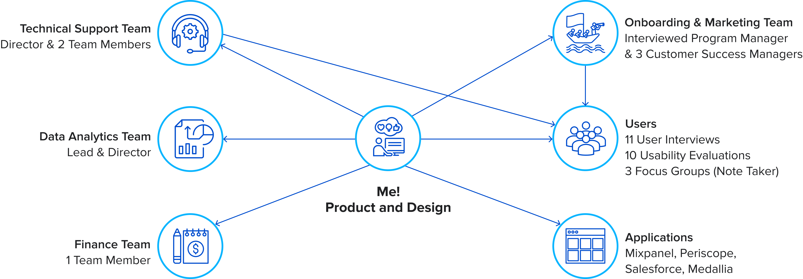

Overview
Collaborated with various teams at BlueJeans, interviewed users and analyzed various reports to gather data and find opportunities and challenges in 7 different phases of the customer journey.
Responsibilities
Planning the Research, Quantitative Research, Contextual Interviews, Affinity Mapping, Usability Testing, Focus Groups
Deliverables
Research Report, Presentation
Logistics
Softwares: Mixpanel, Salesforce, Periscope, Medallia, Dovetail, Meaning Cloud
Duration: 2 Months
Goals
Improve the sign-up and free trial experience
Understand the reasons for upsell, downsell and churn in the enterprise segment
It was identified that some of the major features such as video recording, screen-sharing and Google/Outlook integrations were not used, so I conducted a study to understand why the engagement was low
Research Plan
Collaboration and Data Collection
During my internship, I collaborated with various customer-facing teams such as Support, Marketing, and Sales as well as with the teams that manage the backend of the product such as Data Analysis and Finance to gather relevant data. I understood that as a User Researcher, it is necessary for me to effectively communicate with the users as well as with the other teams in the office.

My First User Interview

Participant scheduling a meeting from BlueJeans Webapp
Key Things I Learned
It is very important to take time and define the problem, scope of the problem and the objective
A lot of data is gathered while conducting research. As a researcher, I should be able to prioritize the data based on the impact it will make in a particular time period and on the resources available
Another point of focus is making a report and presenting it in a way that people from different backgrounds can easily understand
Activities
Other than work, my team and I organized 3 workshops in 2 months:
Interaction Design Foundation Bengaluru: X to UX
Voice of BlueJeans (Organized for the Internal Teams of BlueJeans)
crUX it: UX Tips that Matter
Here are some of the images from the events!
The Team!
"crUX it" Workshop
REFLECTION
I got a chance to look at the real-world problems and how to approach them starting from making a research plan. I presented my work to the Directors of various teams and the Vice President of Product Design and got good feedback.
If given a chance, how would I do it differently?
The project took more time than I estimated because of the delay in recruitment process and if I get a chance, I’d make a more robust plan first and keep buffer time for the unknown obstacles. After talking to the CSMs I realized that the IT admins play an important role in Enterprise sector for distributing and managing the product and I’d like to interview them and understand their pain-points as well.